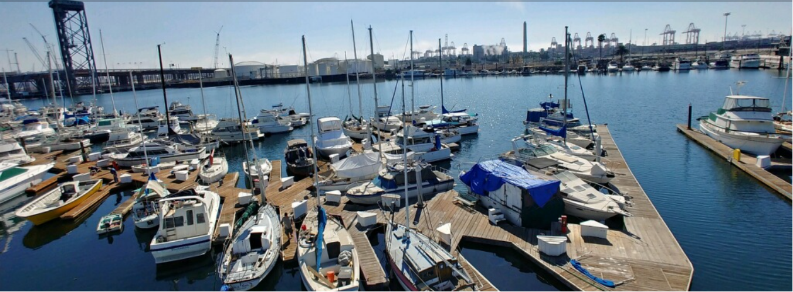

01
01
Keel & Hull Repairs
Repair work and maintenance to help protect your vessel.

Generations of family ownership. A hands-on team. A waterfront home for the people who love boating.
Cerritos Yacht Anchorage is an independent, family-run marina and boatyard on the Cerritos Channel in the Port of Los Angeles.
Our story began in the 1940s, when Ed Rimkus, known as Eddie, and his father helped shape this waterfront property into a small marina and boatyard.
Eddie and his wife ran the business before passing it to their daughter JoAnn. The business continued through the family, with each generation contributing to the marina's history.
Some people know our boatyard as Eddie's Marine Service. The name honors our grandfather and the personal service he established for the boating community.
DISCOVER OUR HISTORY ↗

We know a boat is more than a vessel. It's an investment, a passion and a way of life. Our team brings hands-on experience and a personal approach to every customer and every project.
LET'S TALK ABOUT YOUR BOAT ↗From dependable berthing to specialized maintenance and repair, our facility brings essential marine services together in one location.
01
Repair work and maintenance to help protect your vessel.
 02
02
Hull damage, gelcoat repairs and surface restoration.
 03
03
Bottom maintenance and painting to protect your hull.
 04
04
Marine engine maintenance, exhaust repairs and repowers.
 05
05
Outdrive service, maintenance and painting.
 06
06
Hauling and launching services with our 15-ton crane.
Our waterfront facility combines practical amenities, security and a welcoming boating community.
EXPLORE MARINA SERVICES ↗The most honest and friendliest shop, Mike is an awesome guy, very thorough and will work with your time and budget. They are on time with their schedules. He gave me so much advice for my boat and personally drove me to my slip on a Saturday. He goes above and beyond.
JOHN B.I had to put in a transducer in my boat and my experience from start to finish was excellent. The secretary was very informative and answered all my questions. I brought the boat in and they did a clean professional job.
JASON B.All I can say about Eddie's Marine is that they are the best and most honest boatyard in the Long Beach area. Lupe and his crew did a perfect job, on time and correct.
TLW F.Very happy with the service I received. Mike is a great person and easy to work with. The shipyard performs quality work at a fair price. The marina is well maintained and I received a great slip here.
EL CHOP O.I love this marina. They are very professional and down to earth. Security is great, and you couldn't ask for nicer people who understand boats and the challenges that can arise when owning a boat.
COLLINS R.Questions about berthing, boatyard services or our facility? We'd love to hear from you.